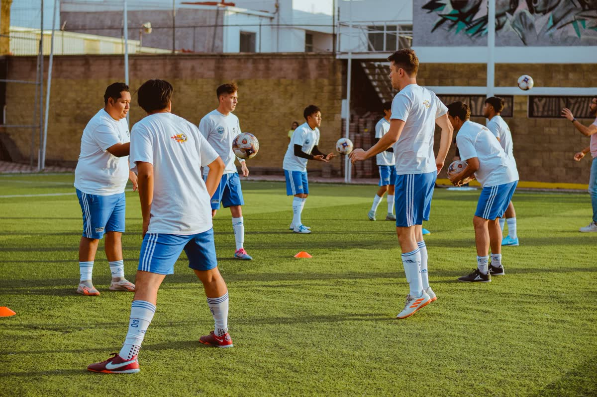
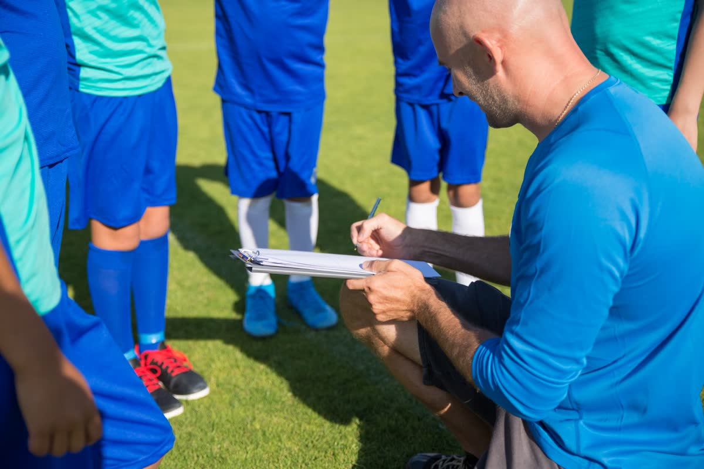
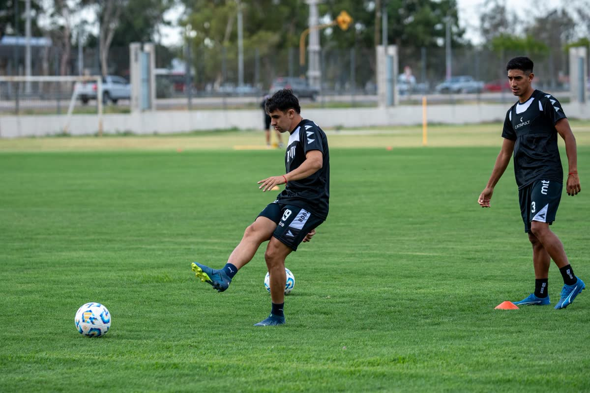
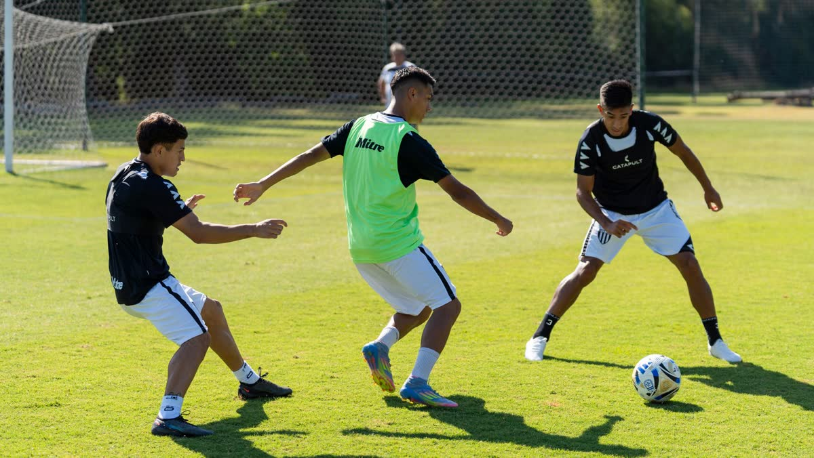
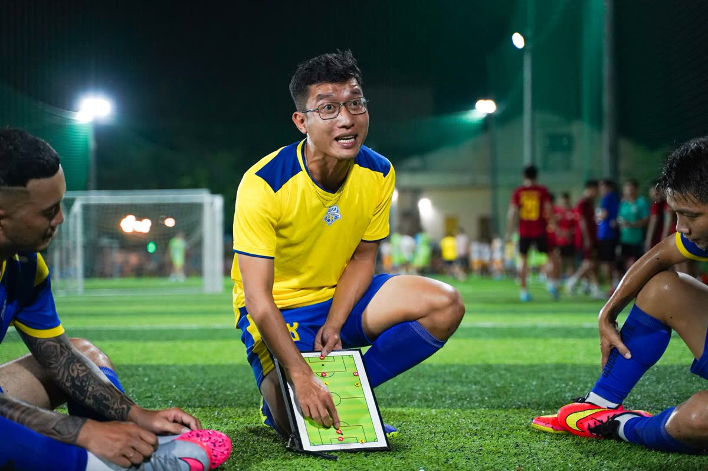
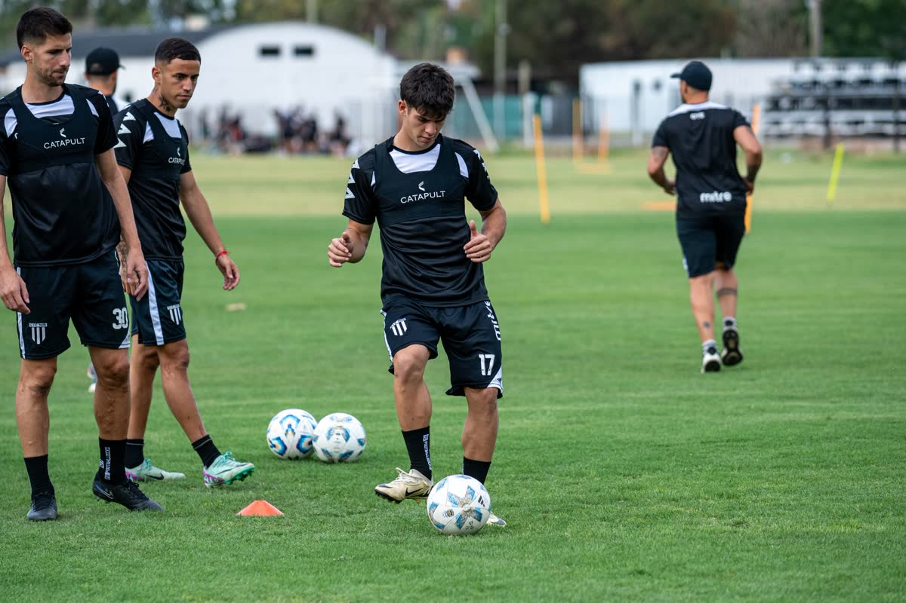

Teoría que se aplica
Metodología, planificación y didáctica explicadas para el club de barrio, no para el paper.
Capacitaciones teóricas y prácticas para entrenadores de fútbol base, directivos y jugadores. Porque antes que deportistas, somos personas.
Antes que deportistas, somos personas
Educación Deportiva y Cívica · CCEF Argentina
Somos una organización sin fines de lucro dedicada a capacitaciones deportivas teóricas y prácticas. Formamos entrenadores de fútbol base, directivos de clubes y jugadores, tanto a nivel deportivo como personal. Estamos convencidos de que el deporte se relaciona directamente con nuestra manera de vivir.
Metodología, planificación y didáctica explicadas para el club de barrio, no para el paper.
Sesiones reales con tus categorías: te vemos entrenar y trabajamos sobre lo que pasa.
Valores, convivencia y ciudadanía: el vestuario también forma a la persona.
Cada capacitación se arma según quién la recibe. No es lo mismo el que dirige, el que gestiona y el que juega.
El eje de todo: quien está cada tarde con los chicos.
Para que el proyecto deportivo no dependa de una persona.
Deportivo y personal, en el mismo lugar.
Elegí quién sos, con qué categoría trabajás y qué te falta resolver. La pizarra te dibuja el trabajo y te arma el plan, con el material digital que le corresponde.
—
Se suma a tu pedido y te llega por email.
Planificaciones, ejercicios, manuales y cursos grabados. Lo comprás y te llega al email con tu enlace de descarga: sin envío, sin esperar.
Sumás lo que necesites a tu pedido. Podés mezclar cursos, fichas y plantillas.
Es la dirección donde te llega la entrega. Si el material es gratuito, lo bajás en el momento.
Un enlace propio, con vencimiento y tope de descargas, para que el material siga siendo tuyo.
Torneos, encuentros formativos y jornadas de capacitación abiertas. Si tu club quiere ser sede, escribinos.






Todas las semanas hablamos de fútbol formativo en la radio, y durante el resto de la semana seguimos la charla en las redes. Todo lo que hacemos es abierto: el objetivo es que llegue al club que lo necesita.
Las dos. Vamos al club a trabajar en el campo con tus categorías, y también damos cursos grabados y encuentros online para quien está lejos.
No. Trabajamos con quien está hoy en el club: entrenadores con y sin título, profes, coordinadores y dirigentes. La capacitación se adapta al punto de partida del grupo.
Planificaciones, fichas de ejercicios, manuales, plantillas editables y cursos grabados. Lo pedís desde la web y te llega al email con tu enlace de descarga.
Sí, y es lo que recomendamos. Armamos programas para el club entero: cuerpo técnico, coordinación y dirigencia, para que todos trabajen con el mismo criterio.
Parte del material es gratuito y parte se arancela para sostener el proyecto. Si tu club no puede afrontarlo, escribinos igual: siempre buscamos la forma.
Escribinos por WhatsApp y armamos la capacitación a la medida de tus categorías, tu cuerpo técnico y tu realidad.